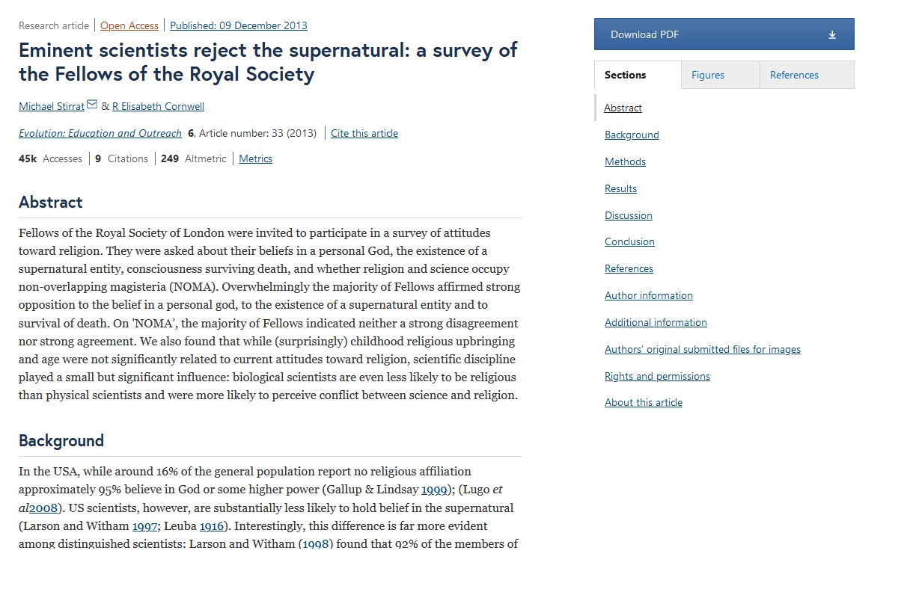

Papers: ¿qué son? ¿Cómo buscarlos? ¿Cómo encontrarlos? ¿Cómo leerlos?
Los papers son estudios científicos, son documentos mediante los cuales los científicos comunican sus resultados a la comunidad científica (y al público). Los papers se publican en journals, que son revistas científicas que usualmente se especializan en un tema (desde cosas relativamente generales como el comportamiento humano, hasta otros muy específicos como estudios sobre una región del cerebro en particular).
Usualmente consisten en un abstract (resumen del estudio entero, normalmente de un párrafo, en donde nombran las conclusiones y la relevancia, para que uno no tenga que leer el estudio entero para saber de qué trata y qué encontraron), introducción (donde se citan papers anteriores y se menciona la problemática a estudiar), metodología (en donde se muestra cómo se recabaron los datos y cómo se los analizaron), resultados (mostrados de forma matemática, con tablas y gráficos), y discusión (en donde se comenta sobre los resultados hallados). En esta sección se suelen mencionar posibles limitaciones del estudio. A veces también se incluye una conclusión (otras veces con la discusión ya es suficiente). No es inusual que se incluya una declaración de posible conflicto de intereses (por ejemplo, si el estudio es sobre las ventajas nutricionales de un alimento, siendo que el estudio fue financiado por una empresa productora de ese alimento).

Los papers, para poder ser publicados, pasan por una etapa de revisión por pares, en donde el estudio es revisado por otros investigadores del mismo campo científico o uno cercano, y comentan con los autores las correcciones y sugerencias que consideren necesarias.
Lastimosamente, la inmensa mayoría de los papers se publican en inglés, así que debemos manejar este idioma para poder manejarnos de forma efectiva en este medio. De todos modos, dada la mejora en los traductores, es cada vez más sencillo poder desenvolverse sin necesidad de tener un alto dominio de este idioma.
¿Cómo buscar papers?
Una muy buena idea es buscar en Google Académico: https://scholar.google.com/
Uno puede filtrar los resultados por fechas (un intervalo de años específico, por ejemplo). Permite ver rápidamente el numero de veces que cada estudio fue citado, lo cual es una medida asociada a su relevancia.
 Otra opción es directamente ir a Wikipedia: por ejemplo, si queremos ver qué evidencia hay a favor de la educación Montessori, vamos a la página de wikipedia de ese tema, y en la sección de referencias vemos que hay más de un paper. Wikipedia provee el link para poder consultar de forma inmediata el paper.
Otra opción es directamente ir a Wikipedia: por ejemplo, si queremos ver qué evidencia hay a favor de la educación Montessori, vamos a la página de wikipedia de ese tema, y en la sección de referencias vemos que hay más de un paper. Wikipedia provee el link para poder consultar de forma inmediata el paper.

¿Cómo encontrar papers?
Lastimosamente, encontrar el link a un paper no implica que podamos leerlo. La inmensa mayoría de los papers están detrás de un paywall, excepto el abstract, que es público. Uno debe pagar sumas astronómicas para poder leerlos (por ejemplo, $30 dólares por un único paper), a menos que uno forme parte de una universidad que esté pagando por acceso a ese journal. Por suerte, hay herramientas que vienen en nuestro auxilio. La más usada se llama Sci-Hub, que es una página en donde, simplemente ingresando el link de un paper, podemos acceder al mismo.
 No se asusten: es simple de usar. Simplemente pegan el link del paper en el cuatro en blanco, y al apretar enter van a poder tener acceso al PDF.
No se asusten: es simple de usar. Simplemente pegan el link del paper en el cuatro en blanco, y al apretar enter van a poder tener acceso al PDF.
 La gran mayoría de los papers están disponibles en esa página. Sin embargo, si no lo está (pasa con algunos journals en particular, o si el paper es muy nuevo), siempre podemos enviar un email a alguno de los autores (sus emails suelen poder verse en el propio , y si no, suelen aparecer fácilmente al googlear el nombre del científico), y muy probablemente estarán encantados de enviarte el pdf.
La gran mayoría de los papers están disponibles en esa página. Sin embargo, si no lo está (pasa con algunos journals en particular, o si el paper es muy nuevo), siempre podemos enviar un email a alguno de los autores (sus emails suelen poder verse en el propio , y si no, suelen aparecer fácilmente al googlear el nombre del científico), y muy probablemente estarán encantados de enviarte el pdf.